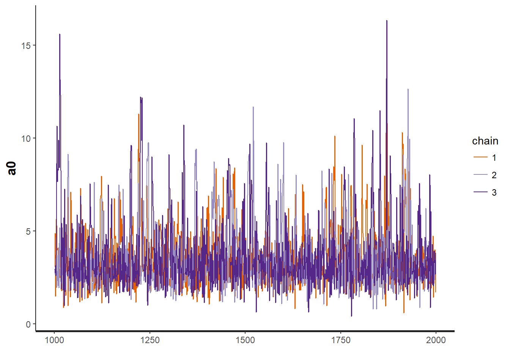
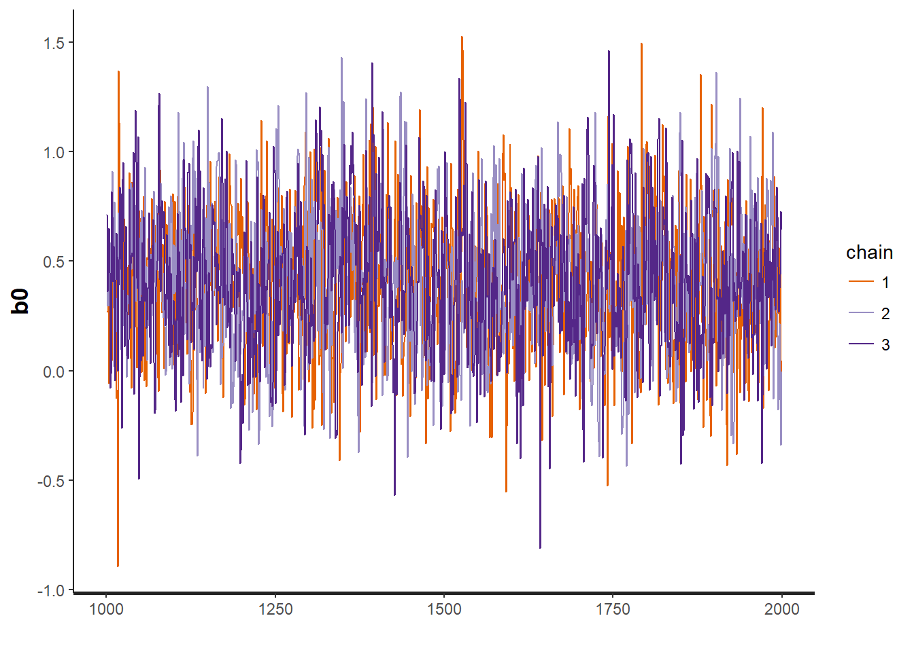
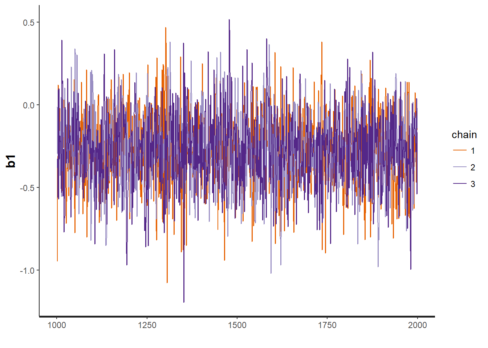
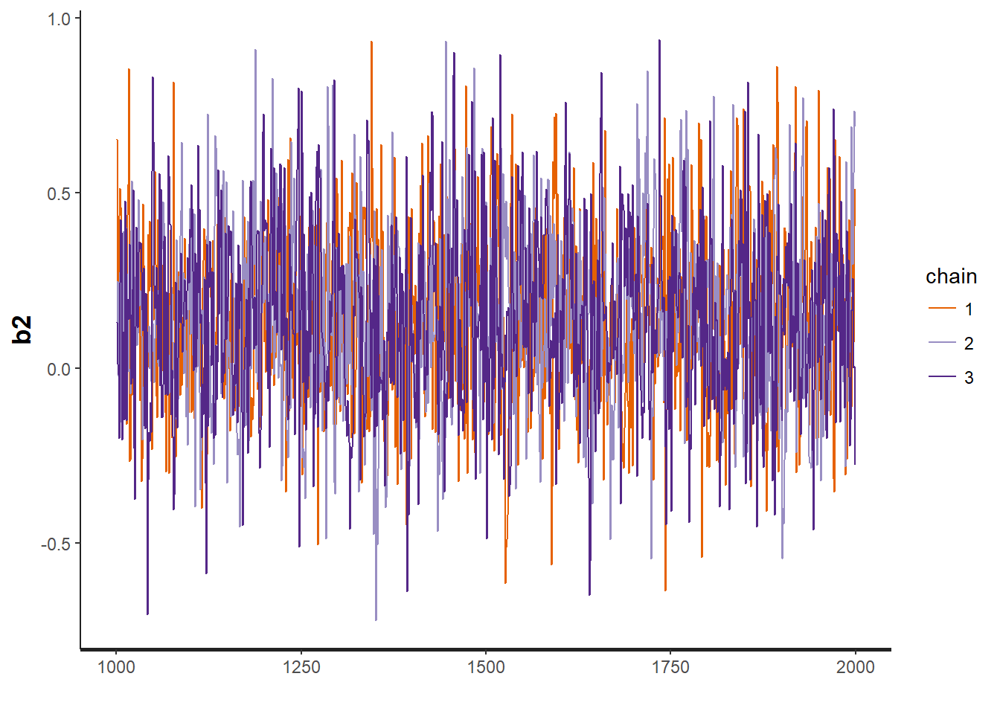
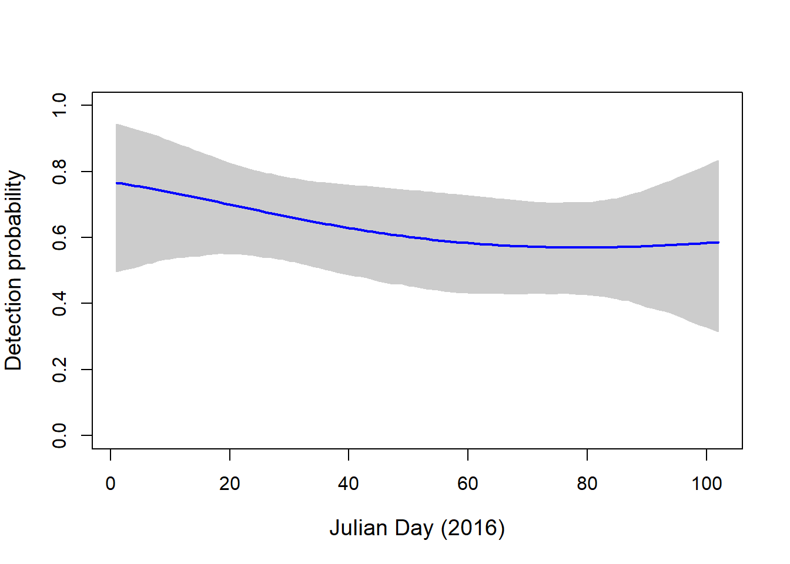
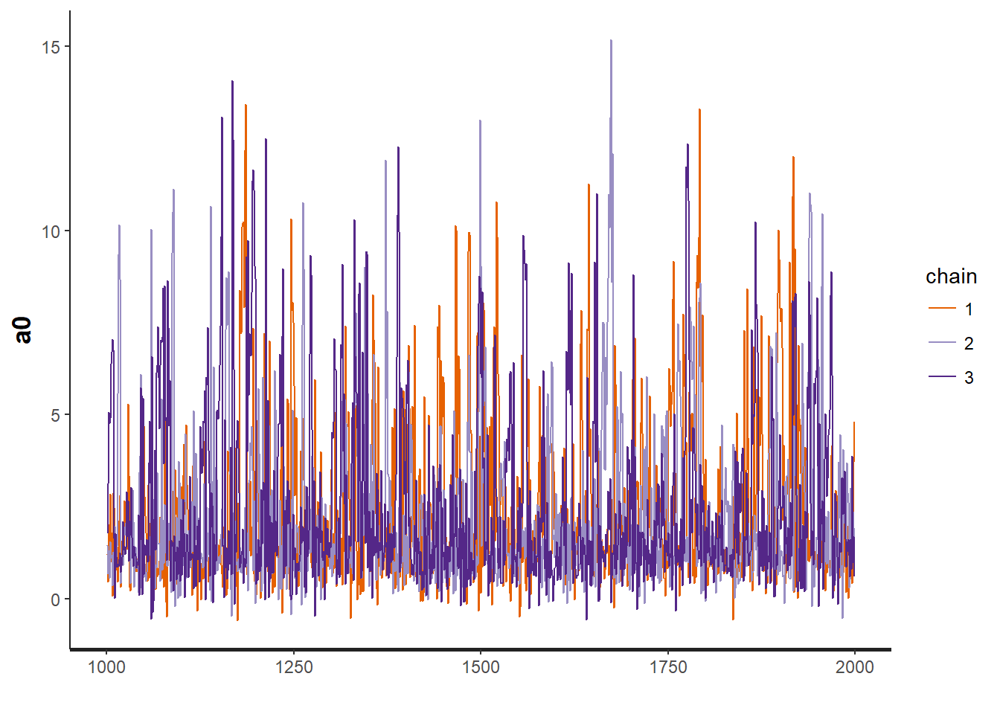
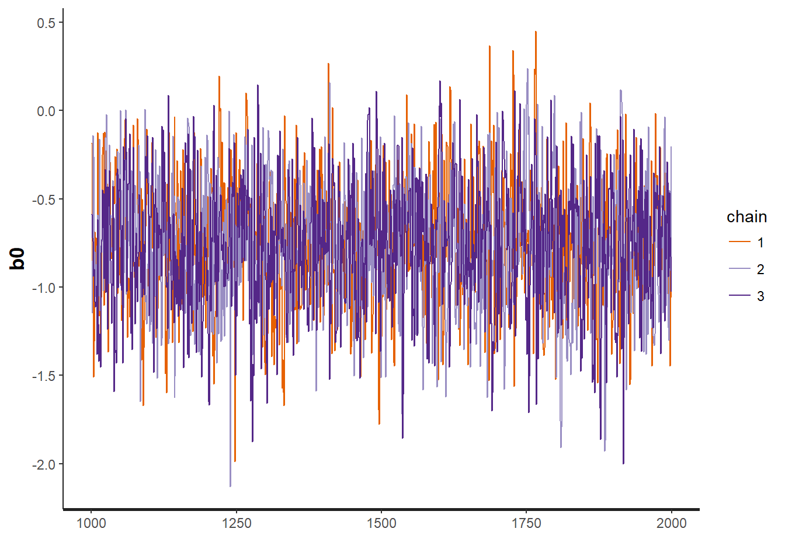
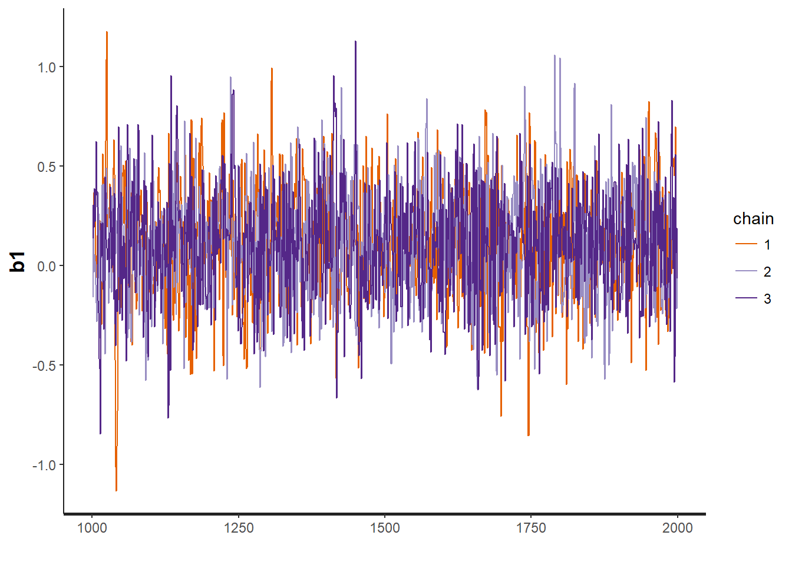
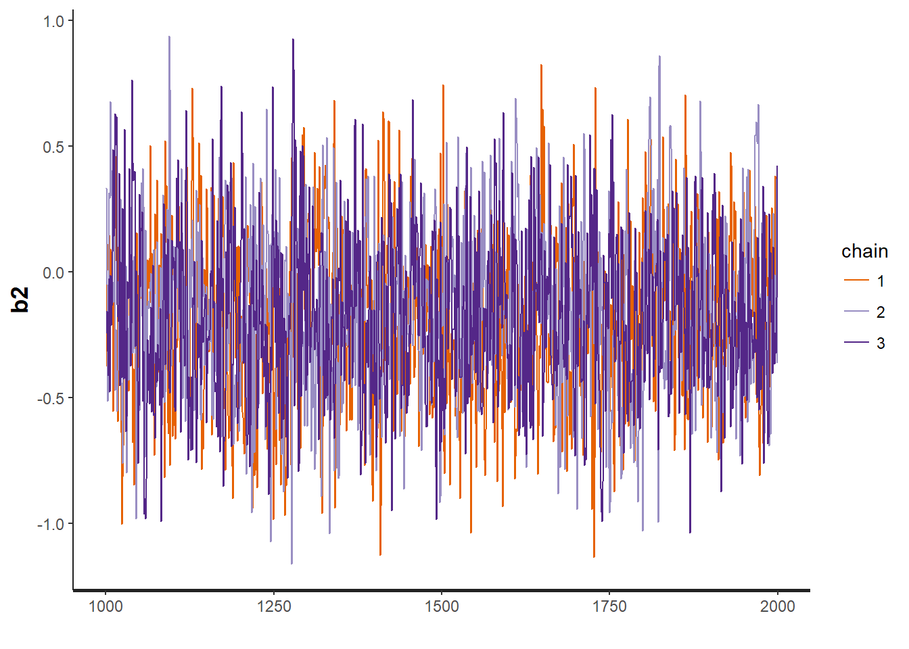
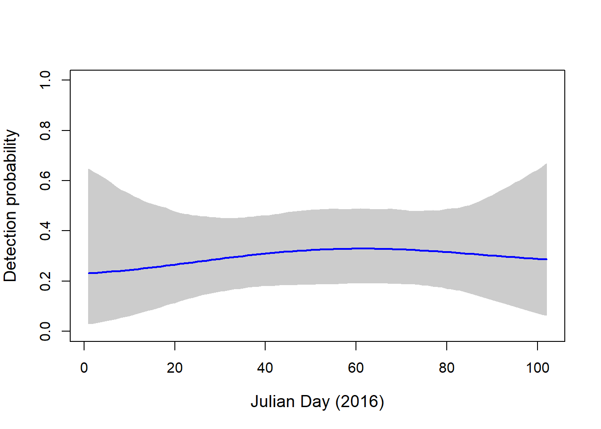

Occupancy models
Nick
Assigned Reading:
Kery 2010. Chapter 20: Nonstandard GLMMs 1: Site-Occupancy Species Distribution Model in Introduction to WinBUGS for Ecologists Stanford full text or try here
Section 14.3 in Korner-Nievergelt et al. 2015. Bayesian data analysis in ecology using linear models with R, BUGS, and Stan. Elsevier. Stanford full text
Key Points
Definition
Occupancy Model: Model used to account for imperfect detection of organisms in surveys and to determine the probability of the true presence or absence of a species at a site. This is done by quantifying the detection probability of a species at a site based off of your data.
Background
Occupancy models can be thought of as an extension of Generalized Linear Mixed Effects models (GLMMs). In the case of occupancy models, we are interested in the random effects- these values tell us the true state of occurence. As such, we can assume that they are drawn from Bernoulli distribution.
The occurence of a species at a given location in your data is the result of two processes:
1. The species is actually present
2. You detect the species in your survey
However, the lack of a detection is either the result:
1. of the species not being present at a site, or
2. you did not detect the species at the site.
In occupancy models, we quantify this uncertainty in detection. The value is called the detection probability \((p)\). When \(p = 1\), we have perfectly detected a species. However, it is often difficult to have perfect detection 100% of the time. In most cases, detection probability is less than 1 \((p<1)\).
Why use occupancy models? (from Kery 2010; Chapter 20)
- species distributions will be underestimated whenever p < 1
- estimates of covariates relationships will be biased toward zero whenever p < 1
- the factors that affect the difficulty with which is species is found may end up in predictive models of species occurrence
Requirements/Assumptions
- Repeated surveys at a site within a period of ‘closure’
- Sites must be replicated spatially and independent
- Detection probability is constant or explained by covariates.
- Occupancy probability is constant or explained by covariates
Basic model form
\(Z_i \sim Bernoulli (\psi_i)\) Biological process yields true state
\(y_{ij} \sim Bernoulli(Z_i * p_{ij})\) Observation process yields observations (this is the data)
\(Z_i\) is the true occupancy state \(\psi\) parameter describing the true state, drawn from a Bernoulli distribution. This can be modeled with covariates.
\(p_{ij}\) is the detection probability
These values are estimated from the data in your model
You can include the same or separate covariates in the detection and occupancy components of the model, similar to Zero-Inflated models from a few weeks ago.
Extensions
The problem of detectability is further compounded when trying to measure abundance. When you move from presence/absence to number of individuals, the probability that you have counted (detected) every individual moves further away from zero. As an extension of the occupancy model, the N-mixture abundance model can account for imperfect detection of individuals within a species. To do this, we simply assume that local abundance at a site is described by a Poisson distribution.
\(N_i \sim Poisson(\lambda)\) 1. Ecological process that produces true population size
\(y_{ij}|N_i \sim Binomial(N_i, p)\) 2. Observation process gives counts
\(\lambda\) describes the variation in abundance at sites. This parameter can be modeled with covariates to describes differences in \(N_i\).
\(y_{ij}\) are the observed counts, given the true population size \(N_i\) are a result of you ability to detect individuals with detection probability \(p\).
Additional reading can be found in Chapter 21 of Kery 2010.
Analysis Example
For this example, we will be using Costa Rican bird banding data that I (and others) collected in 2016. The examples use simple Occupancy models from Korner-Nievergelt et al. 2015. Two different data objects will be used, one for the Ochre-bellied Flycatcher (OBFL), and one for the Violet Sabrewing (VISA). Each data object contains presence/absence information from 6 surveys (j replicates) across 18 sites, as well as the standardized Julian Date from 2016.
The rstan package is used to interface with Stan, and the blmeco package, which contains functions from Korner-Nievergelt et al. 2015.
Set working directory, load packages and the two separate data objects.
#setwd("")```
#############################################
library(rstan)
library(blmeco)
load('./data/OBFL_Occupancy_Stan.RData', verbose = T)## Loading objects:
## data.obflload('./data/VISA_Occupancy_Stan.RData', verbose = T)## Loading objects:
## data.visaLet’s start by exploring the OBFL data object; bundled to work with Stan.
We see that there are 18 sites (N), 6 replicates at each site (J), observed occupancy at almost all sites (x), and standardized sampling date as Julian Date (DAY).
data.obfl## $y
## rep
## Site 1 2 3 4 5 6
## CAGO 1 1 1 1 1 1
## COPA 1 1 1 1 1 1
## ELPU 0 0 0 0 0 0
## FILA 0 1 1 1 1 1
## GABO 1 1 0 0 0 1
## GAPA 1 1 1 1 1 1
## ISLA 1 1 0 0 0 0
## LOAN 1 1 0 1 1 1
## MELI 1 1 1 1 1 1
## PANA 1 0 1 0 1 0
## PINO 0 1 1 1 1 1
## QUST 0 0 0 1 0 0
## RIJA 1 1 0 1 1 1
## SABO 1 0 1 0 0 0
## SAFR 1 0 0 0 0 0
## SAGA 1 0 0 1 0 0
## SARI 1 1 1 0 1 0
## SATE 1 1 0 0 1 0
##
## $N
## [1] 18
##
## $J
## [1] 6
##
## $x
## [1] 1 1 0 1 1 1 1 1 1 1 1 1 1 1 1 1 1 1
##
## $DAY
## 1 2 3 4 5 6
## CAGO -1.5619565 -1.4612762 -1.360595841 -0.7061737 1.3074329 1.3577730
## COPA -0.8068540 -0.6558335 -0.102091735 0.6026706 0.8040312 1.6094738
## ELPU -0.9578745 -0.5048130 -0.001411406 0.6530107 0.7033509 1.5087935
## FILA -0.8068540 -0.2531122 0.048928758 0.5019902 0.9550517 1.7604943
## GABO -0.7565139 -0.3537926 0.300629579 0.5523304 0.8543714 1.1564124
## GAPA -0.7565139 -0.4041327 0.199949251 0.5523304 0.8543714 1.1564124
## ISLA -1.2599155 -1.1592352 -1.058554856 -0.2027721 1.2570927 1.5591337
## LOAN -1.2095753 -1.1088950 -1.008214691 -0.4544729 1.3577730 1.6094738
## MELI -1.5116163 -1.4109360 -1.310255677 -0.1524319 0.7536911 1.2067525
## PANA -0.8571942 -0.5048130 -0.051751571 0.1496091 1.0053919 1.6598140
## PINO -1.2599155 -1.1592352 -1.058554856 -0.2027721 0.9047116 1.1060722
## QUST -0.9075344 -0.5551532 0.099268922 0.4013099 1.4584534 1.7101542
## RIJA -1.5116163 -1.4109360 -1.310255677 -0.1524319 0.7536911 1.2067525
## SABO -0.8571942 -0.3034524 -0.051751571 0.1496091 1.0053919 1.0557320
## SAFR -1.2095753 -1.1088950 -1.008214691 0.3006296 0.3509697 0.8040312
## SAGA -1.5619565 -1.4612762 -1.360595841 -0.7061737 0.7033509 1.3074329
## SARI -0.9578745 -0.6054934 0.250289415 0.4516501 1.4081132 1.7101542
## SATE -0.9075344 -0.3537926 0.099268922 0.4013099 1.0557320 0.0000000Now we will write the stan model. This is modified from Korner-Nievergelt et al. 2015.
The model has two main components. The first component is the occupancy model, which describes the true occupancy state of the OBFL across the 18 sites. For simplicity, we are using an intercept only model, without any covariates describing true occupancy state across the 18 sites.
The second part of the model is the detection process, that determines detection probability across the 18 sites for each survey replicate. Because the focus of this example is on detection probability, we did include covariates, Julian date and its quadratic. As such, we expect detection probability to be influenced by time of year.
Basic model form
\(logit(p_{ij}) = \beta_0 + \beta_1 * DAY_{ij} + \beta_2 * DAY_{ij} * DAY_{ij}\)
\(logit(\psi_i) = \alpha_0\) Assumes occupancy is equal among all sites
sink("./src/occupancy.stan")
cat("
data {
int<lower=0> N; //Number of Sites
int<lower=6> J; //Number of Replicates at each site
int<lower=0, upper=1> y[N, J]; //Detection at each site on each sampling rep
int<lower=0, upper=1> x[N]; //Observed occupancy at each site
real DAY[N, J];
}
parameters {
real a0; //specifying regression parameters
real b0;
real b1;
real b2;
}
transformed parameters {
real<lower=0,upper=1> psi[N];
real<lower=0,upper=1> p[N, J];
for(i in 1:N) {
psi[i] = inv_logit(a0); //intercept-only model for occupancy
for(j in 1:J) {
p[i, j] = inv_logit(b0 + b1*DAY[i, j] + b2*DAY[i, j]*DAY[i, j]); //Detection probability on inverse logit
}
}
}
model {
// Priors
a0 ~ normal(0, 5);
b0 ~ normal(0, 5);
b1 ~ normal(0, 5);
b2 ~ normal(0, 5);
// likelihood
for(i in 1:N) {
if(x[i]==1) {
1 ~ bernoulli(psi[i]);
y[i] ~ bernoulli(p[i]);
}
if(x[i]==0) {
increment_log_prob(log_sum_exp(log(psi[i]) + log1m(p[i,1]) + log1m(p[i,2]) +
log1m(p[i,3]) + log1m(p[i,4]) + log1m(p[i,5]) + log1m(p[i,6]), log1m(psi[i]))); //?
}
}
}
",fill = TRUE)
sink()Now let’s fit the occupancy model that we wrote;
Apparently running Stan models while trying to Knit in Rmarkdown is difficult. The model output is saved, so it can be loaded for use. Alternatively, you can run the code in Rmarkdown without Knitting or in your R console.
For now, we will just load the data output that I ran on my computer and uploaded.
load('./data/OBFL.occ.RData', verbose = T)## Loading objects:
## OBFL.occ# OBFL.occ = stan(file = "./src/occupancy.stan", data = data.obfl, iter = 2000, chains = 3)You may get some error messages when you run the model. How to deal with this depends on what the message says. Some of the language in the model above is depracated, but the model should run fine.
print(OBFL.occ, c("a0", "b0", "b1", "b2"))## Inference for Stan model: occupancy.
## 3 chains, each with iter=2000; warmup=1000; thin=1;
## post-warmup draws per chain=1000, total post-warmup draws=3000.
##
## mean se_mean sd 2.5% 25% 50% 75% 97.5% n_eff Rhat
## a0 3.63 0.06 1.78 1.45 2.45 3.20 4.26 8.51 857 1
## b0 0.41 0.01 0.33 -0.20 0.18 0.41 0.64 1.05 1540 1
## b1 -0.27 0.00 0.22 -0.71 -0.42 -0.27 -0.13 0.17 2180 1
## b2 0.15 0.01 0.25 -0.33 -0.03 0.15 0.32 0.65 1573 1
##
## Samples were drawn using NUTS(diag_e) at Thu Nov 30 16:59:19 2017.
## For each parameter, n_eff is a crude measure of effective sample size,
## and Rhat is the potential scale reduction factor on split chains (at
## convergence, Rhat=1).Check for convergence of our model parameters
traceplot(OBFL.occ, "a0") # intercept for occupancy model
traceplot(OBFL.occ, "b0") # intercept for detection model
traceplot(OBFL.occ, "b1") # regression parameter for julian date
traceplot(OBFL.occ, "b2") # regression parameter for (julian date)^2
Often, we are interested in understanding how detection probability changes in relationship to our detection covariates. To address this, we can plot the predicted detection probabilty throughout the range of our covariate values. Here, we are interested in how it changes through Julian date, or through the season.
Plot predicted relationship between detection probability throughout the season.
To do this, loop through and multiply simulated values by dates. Because our values are on the logit scale, we transform our values using the plogis function to put them on the normal scale.
pred.DAY <- 1:102 # original dates span from Jan 18 - April 28, 2016; 102 days
pred.trDAY <- scale(pred.DAY)
modsims <- rstan::extract(OBFL.occ)
nsim <- length(modsims$lp__)
newp <- array(dim=c(length(pred.DAY), nsim))
for(i in 1:nsim){ ## Loop through simulations
newp[,i] <- plogis(modsims$b0[i] + modsims$b1[i]*pred.trDAY + modsims$b2[i]*pred.trDAY^2)
}Sketch the results
plot(NA, ylim=c(0,1), xlim=c(1, 102), axes=T, ylab="Detection probability", xlab="Julian Day (2016)", cex.lab=1.2)
polygon(c(pred.DAY, pred.DAY[length(pred.DAY):1]), c(apply(newp, 1, quantile, probs=0.025), apply(newp, 1, quantile, probs=0.975)[length(pred.DAY):1]), col="grey80", border="grey80")
lines(pred.DAY, apply(newp, 1, mean), col="blue", lwd=2.) As expected, detection probability is really high for the OBFL. It is a common bird found in most sites on most sampling dates.
Finally, we can look at the number of sites that OBFL is predicted to occur at based on our model, and compare this with what was actually observed
modsims <- rstan::extract(OBFL.occ)
# Predicted mean
# quantile(plogis(modsims$a0), prob=c(0.025, 0.5, 0.957))
# The quantile function would not Knit in Rmarkdown. Output is:
# 2.5% 50% 95.7%
# 0.8092648 0.9610082 0.9994805
# Observed mean
mean(data.obfl$x)## [1] 0.9444444We see that they are very similar. Our sampling was sufficient for this species.
Now we can look at a species that is much less common. The Violet Sabrewing is a species of hummingbird that likes more forested areas, but can also be found in agriculture
data.visa## $y
## rep
## Site 1 2 3 4 5 6
## CAGO 0 0 0 0 0 0
## COPA 0 0 0 1 0 0
## ELPU 1 0 0 1 1 0
## FILA 1 0 1 0 1 1
## GABO 0 0 0 1 0 0
## GAPA 0 1 0 1 1 1
## ISLA 0 0 0 0 0 0
## LOAN 1 0 0 0 0 0
## MELI 1 0 1 1 1 1
## PANA 1 0 0 0 0 0
## PINO 0 0 0 0 0 0
## QUST 0 0 0 0 0 0
## RIJA 0 0 1 0 0 1
## SABO 1 0 1 0 0 0
## SAFR 0 0 0 0 1 0
## SAGA 0 0 0 0 0 0
## SARI 0 0 0 0 0 0
## SATE 0 0 1 0 0 0
##
## $N
## [1] 18
##
## $J
## [1] 6
##
## $x
## [1] 0 1 1 1 1 1 0 1 1 1 0 0 1 1 1 0 0 1
##
## $DAY
## 1 2 3 4 5 6
## CAGO -1.5619565 -1.4612762 -1.360595841 -0.7061737 1.3074329 1.3577730
## COPA -0.8068540 -0.6558335 -0.102091735 0.6026706 0.8040312 1.6094738
## ELPU -0.9578745 -0.5048130 -0.001411406 0.6530107 0.7033509 1.5087935
## FILA -0.8068540 -0.2531122 0.048928758 0.5019902 0.9550517 1.7604943
## GABO -0.7565139 -0.3537926 0.300629579 0.5523304 0.8543714 1.1564124
## GAPA -0.7565139 -0.4041327 0.199949251 0.5523304 0.8543714 1.1564124
## ISLA -1.2599155 -1.1592352 -1.058554856 -0.2027721 1.2570927 1.5591337
## LOAN -1.2095753 -1.1088950 -1.008214691 -0.4544729 1.3577730 1.6094738
## MELI -1.5116163 -1.4109360 -1.310255677 -0.1524319 0.7536911 1.2067525
## PANA -0.8571942 -0.5048130 -0.051751571 0.1496091 1.0053919 1.6598140
## PINO -1.2599155 -1.1592352 -1.058554856 -0.2027721 0.9047116 1.1060722
## QUST -0.9075344 -0.5551532 0.099268922 0.4013099 1.4584534 1.7101542
## RIJA -1.5116163 -1.4109360 -1.310255677 -0.1524319 0.7536911 1.2067525
## SABO -0.8571942 -0.3034524 -0.051751571 0.1496091 1.0053919 1.0557320
## SAFR -1.2095753 -1.1088950 -1.008214691 0.3006296 0.3509697 0.8040312
## SAGA -1.5619565 -1.4612762 -1.360595841 -0.7061737 0.7033509 1.3074329
## SARI -0.9578745 -0.6054934 0.250289415 0.4516501 1.4081132 1.7101542
## SATE -0.9075344 -0.3537926 0.099268922 0.4013099 1.0557320 0.0000000We will use the same model to look at how detection probability changes for this species throughout the sampling season.
# VISA.occ <- stan(file = "./src/occupancy.stan", data = data.visa, iter = 2000, chains = 3)
load('./data/VISA.occ.RData', verbose=T)## Loading objects:
## VISA.occprint(VISA.occ, c("a0", "b0", "b1", "b2"))## Inference for Stan model: occupancy.
## 3 chains, each with iter=2000; warmup=1000; thin=1;
## post-warmup draws per chain=1000, total post-warmup draws=3000.
##
## mean se_mean sd 2.5% 25% 50% 75% 97.5% n_eff Rhat
## a0 2.43 0.09 2.31 0.04 0.94 1.61 3.14 9.00 731 1
## b0 -0.75 0.01 0.36 -1.45 -0.99 -0.76 -0.50 -0.06 1501 1
## b1 0.12 0.01 0.28 -0.43 -0.08 0.12 0.30 0.65 1779 1
## b2 -0.17 0.01 0.33 -0.79 -0.41 -0.18 0.06 0.51 1484 1
##
## Samples were drawn using NUTS(diag_e) at Thu Nov 30 17:00:41 2017.
## For each parameter, n_eff is a crude measure of effective sample size,
## and Rhat is the potential scale reduction factor on split chains (at
## convergence, Rhat=1).Assess model convergence
traceplot(VISA.occ, "a0")
traceplot(VISA.occ, "b0")
traceplot(VISA.occ, "b0")
traceplot(VISA.occ, "b1")
traceplot(VISA.occ, "b2")
Predict detection probability and plot
pred.DAY <- 1:102 # original dates span from Jan 18 - April 28, 2016; 102 days
pred.trDAY <- scale(pred.DAY)
modsims <- rstan::extract(VISA.occ)
nsim <- length(modsims$lp__)
newp.visa <- array(dim=c(length(pred.DAY), nsim))
for(i in 1:nsim){
newp.visa[,i] <- plogis(modsims$b0[i] + modsims$b1[i]*pred.trDAY + modsims$b2[i]*pred.trDAY^2)
}
# Make figure
plot(NA, ylim=c(0,1), xlim=c(1, 102), axes=T, ylab="Detection probability", xlab="Julian Day (2016)", cex.lab=1.2)
polygon(c(pred.DAY, pred.DAY[length(pred.DAY):1]), c(apply(newp.visa, 1, quantile, probs=0.025), apply(newp.visa, 1, quantile, probs=0.975)[length(pred.DAY):1]), col="grey80", border="grey80")
lines(pred.DAY, apply(newp.visa, 1, mean), col="blue", lwd=2.)
We see much lower detection probability for this species, which suggests that, even on days that we did not capture this bird, it may have been present at the site.
Let’s look at the predicted number of sites VISA occupies vs. the observed number of occupied sites.
modsims <- rstan::extract(VISA.occ)
# Predicted mean
# quantile(plogis(modsims$a0), prob=c(0.025, 0.5, 0.957))
# The quantile function would not Knit in Rmarkdown. Output is:
# 2.5% 50% 95.7%
# 0.5103046 0.8336505 0.9996000
# Observed mean
mean(data.visa$x)## [1] 0.6666667The model predicts that VISA is present at 82.65% of the sites, whereas it was only observed at 66.67% of the sites. This is a good example of how accounting for detection probability can be important for understanding the full distribution of a species across your sites.
Discussion Questions
- What are a few big problem with the models used above?
- Value in using occupancy models in your work?
- How big of a problem is it to not capture true detection? Does it depend on the question?